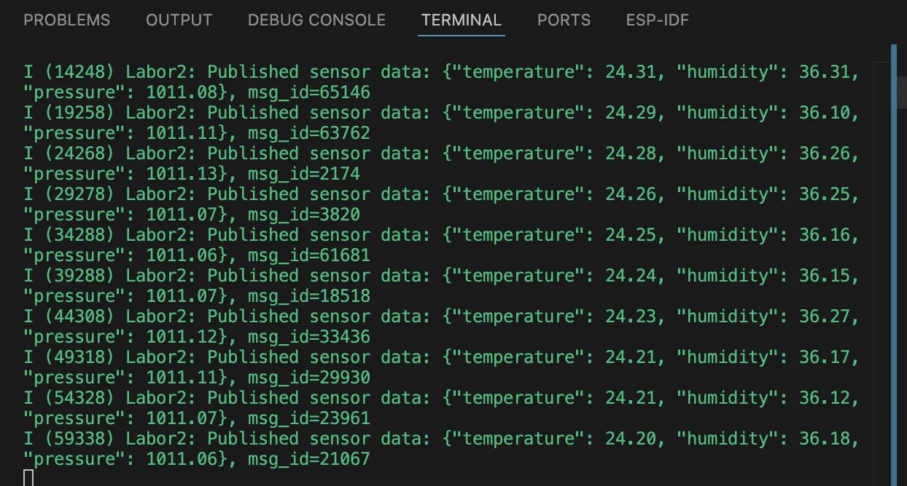

ESP32 environmental telemetry
Tiny device. Real sensor. Networked data.
 IOT / SENSOR-TO-NETWORK
IOT / SENSOR-TO-NETWORKThe challenge
Environmental data only becomes useful when it can be reliably acquired, formatted and sent from an embedded device to other systems.
The approach
Connected the BME280 over I²C and used the ESP-IDF framework to manage measurements, Wi-Fi connectivity and MQTT publication. The public code adapts the original experiment to remove hard-coded credentials and improve error handling.
- I²C sensor discovery and peripheral communication
- Temperature, humidity and atmospheric-pressure acquisition
- FreeRTOS event groups and Wi-Fi connectivity state
- JSON telemetry via MQTT with documented validation scope
The outcome
Original laboratory evidence shows device detection at address 0x76, live readings and MQTT publication requests. The security-improved public revision has not been independently compiled or retested on the original hardware.
A complete BME280 → ESP32 → Wi-Fi → MQTT laboratory workflow.
From the project

Original lab tests succeeded; the published security-cleaned code has not been rebuilt or revalidated with ESP-IDF.